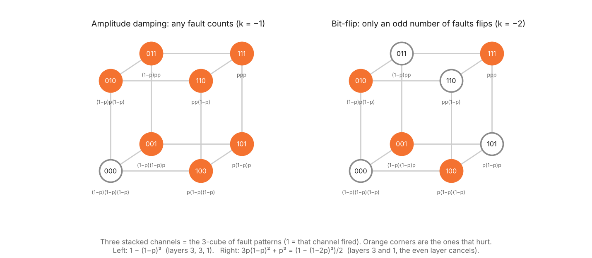
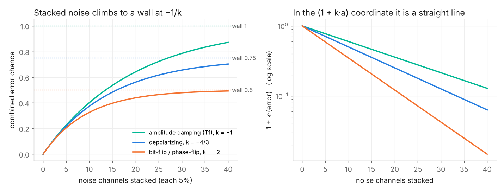
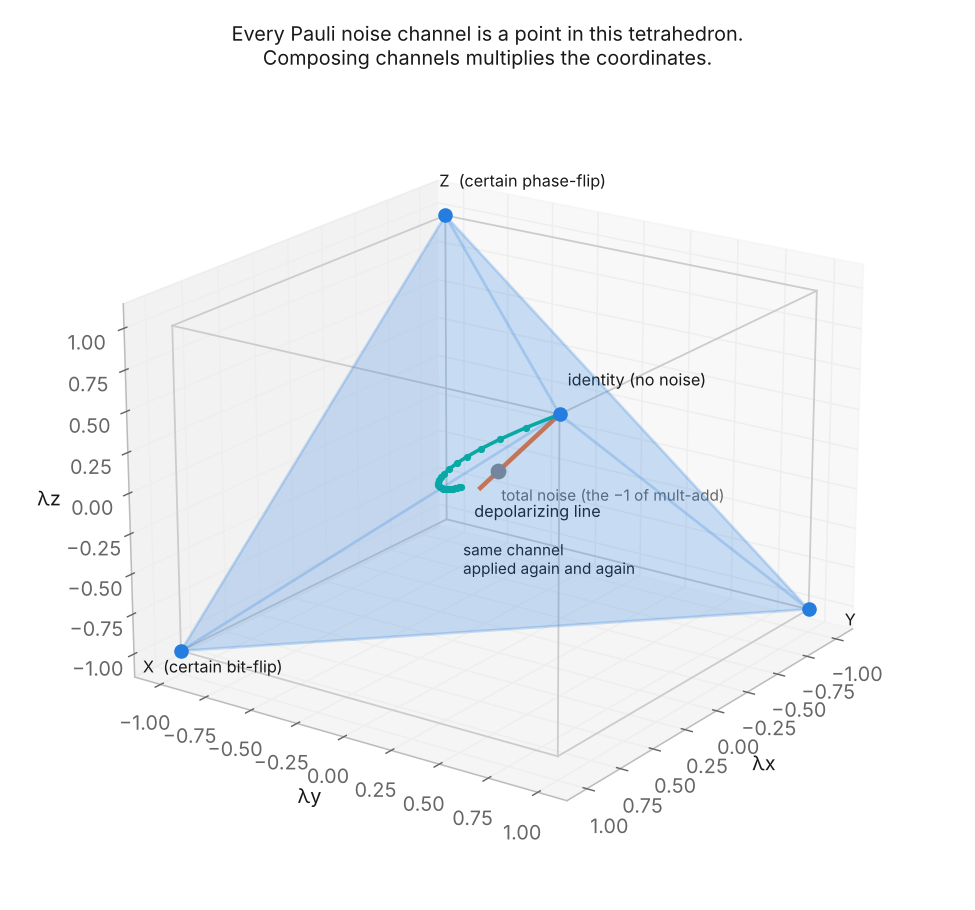
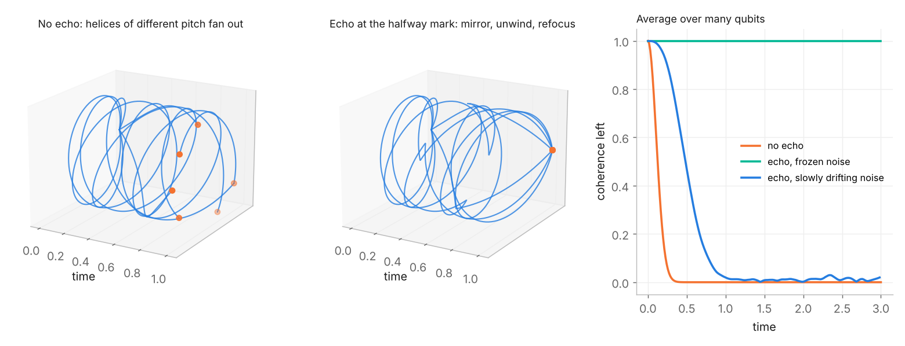
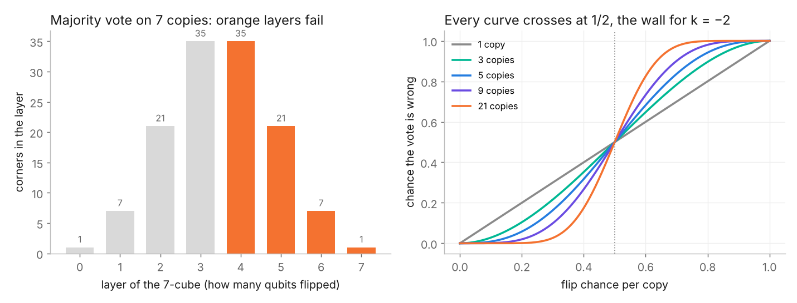
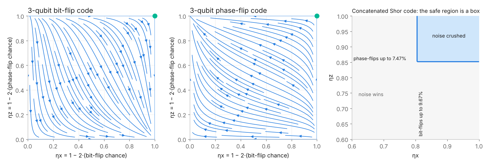
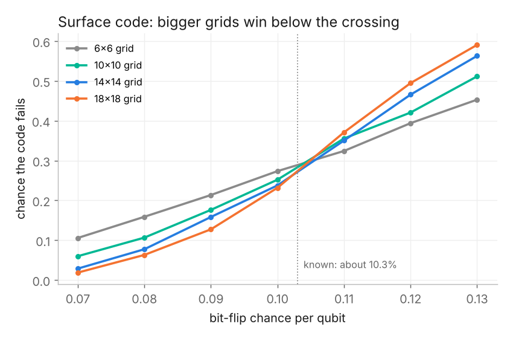

Fused Hyperoperation Algebra · quantum noise · November 25, 2026
Every standard way a qubit gets noisy combines by the same rule, a + b + k·a·b: your circle operation ∘ₖ (called mult-add before 1.0) with a weight k. Only the weight changes from one kind of noise to the next. Error-correcting codes then act as maps on the cube that push noise back toward the corner where nothing went wrong.
The picture is exact and easy to see. Honestly, every piece of it is already known in quantum information. What it gives you is one geometric lens over all of it, not a new tool for beating real thresholds.

On the call, the combined error for two noise sources was given as p + q − pq. That rule is right for one kind of noise and wrong for another.
Checked both ways: a density-matrix simulation of the actual quantum channels agrees with each rule to 10−16, and the call's rule misses bit-flips by 0.07 at p = 0.13, q = 0.27. Lean proves the gap is exactly pq.
The other claim from the call holds: on bits, "any fault" is OR and "odd number of faults" is XOR, and XOR is the arithmetic that error-correcting codes run on.
Write a ⊕k b = a + b + k·a·b. With k = 1 it is your rung-1 circle operation. Multiply everything by k and any weighted version turns into the plain circle operation, so they are all the same operation seen at different scales.
| Noise | Rule | k | Wall −1/k |
|---|---|---|---|
| Amplitude damping (T1) | g + h − gh | −1 | 1 |
| Depolarizing, one qubit | p + q − (4/3)pq | −4/3 | 3/4 |
| Bit-flip or phase-flip | p + q − 2pq | −2 | 1/2 |
The coordinate 1 + k·a is what physicists call the fidelity or polarization: how much of the qubit's state survives. Stacking channels multiplies it, so on a log scale noise adds up in a straight line.
The wall is the circle operation's −1. In the plain circle operation, −1 swallows everything: (−1) ⊕ b = −1. Here the matching point −1/k is total noise, where the qubit holds no information at all. You've said you dislike 0 × 4 = 0 because information is lost. Quantum noise is exactly that loss, and noise reduction is the work of staying away from the wall.

Stack n channels and each fault pattern is a corner of the n-cube, weighted by p for every channel that fired and 1 − p for every one that didn't. This is your Pascal cube: layer j holds C(n, j) corners. The picture at the top shows n = 3.
So the weight k is a statement about geometry: which corners of the cube hurt.
A general "Pauli" noise channel flips a qubit by X, Y or Z with some chances. Record how much of each direction survives, (λx, λy, λz), and you get a point in the cube [−1, 1]³. The points that are real channels fill the tetrahedron on four alternate corners of that cube: no noise, a certain X, a certain Y, a certain Z.
Two facts make this the cleanest geometric picture in the whole study:
Repeating a channel walks the point toward the centre, total noise. Depolarizing noise is the diagonal from the clean corner through the centre. A known trick called twirling (randomly rotating the noise) projects any channel onto that diagonal, which is why so much of quantum computing models noise as depolarizing.


A qubit in superposition carries a phase that turns at a slightly wrong rate when its surroundings jitter. Over time its state draws a helix, exactly your "curves via i" picture, and different qubits get different pitches, so their helices fan out and the average washes away.
The spin echo flips the qubit at the halfway mark. That mirrors the helix, the second half unwinds the first, and every qubit lands back on the same point. In circle-operation terms, the second half is composed with its own inverse: a ⊕ (−a/(1 + a)) = 0. It also matches your idea of negatives as a mirror image. With frozen noise the echo undoes everything; with slowly drifting noise it undoes the slow part and buys time. Stacking many such mirrors is dynamical decoupling, one of the main noise-reduction methods on real hardware. All of this is known physics (Hahn, 1950), but it is your geometry exactly.
Store one bit as n copies and take a majority vote. Every pattern of flips is a corner of the n-cube, and the vote fails on the upper half of the layers. So the chance of failure is a sum of whole cube layers.


Give each qubit a bit-flip chance and a phase-flip chance and plot their survival coordinates (ηx, ηz) on a square. A code is a map on that square, and the arrows show where it sends the noise.
The box shape is a real geometric fact: in this code the two kinds of noise never mix, so the two thresholds are independent. The lopsided box is a design hint. If your hardware's noise is mostly phase-flips, swap the inner and outer codes and the larger allowance goes to phase-flips. That is the idea behind tailoring codes to biased noise, an active known area.
These are code-capacity numbers: perfect gates and measurement, independent flips, and block-by-block decoding. Checked three ways: a full density-matrix simulation of the 3-qubit code matches the formulas to six digits, Monte Carlo on 9 and 81 qubits matches the Shor map, and Lean confirms by exact rational arithmetic that the thresholds sit between 9.65% and 9.70%, and between 7.45% and 7.50%.
The code real hardware is building toward is the surface code: qubits on a grid, checks on its squares. With bit-flip noise and a standard decoder (minimum-weight matching), bigger grids win below a crossing near 10%, matching the known value of about 10.3%. The best possible decoder reaches about 10.9%.
The cube still describes it: failures are a region of the n-cube, and the lowest failing layer is half the grid width, so failures fall off like p raised to that power. But the threshold number itself comes from statistical physics (it maps onto a random magnet), and the cube gives no shortcut to it. I want to be plain about that.

Every linear code has a dual code. A classic theorem (MacWilliams, 1963) says the dual's layer counts come from the code's by substituting x → x + y and y → x − y: putting + and − signs on the cube's corners. In noise terms, it turns flip chances p into survival coordinates 1 − 2p. So the chance a code misses an error can be read off the dual code's layers, weighted by powers of 1 − 2p. Same signs as the bit-flip parity and the Möbius signs on the primes page: one cube, signed. Known, but it ties three of your pages together.
| Use | Does it help? | Why |
|---|---|---|
| Bookkeeping for stacked noise | Yes, for seeing | One rule, a + b + k·ab, covers every channel; the log coordinate turns a noise budget into addition. |
| Code design as a flow | Yes, for seeing | The square and tetrahedron show at a glance which noise a code helps and which it hurts, and the shape of the safe region. |
| Echo and decoupling | A good picture | Mirror the helix, compose with the inverse. Explains it; designs nothing new. |
| Thresholds of real codes | No | The surface code's threshold needs statistical physics; the cube only says how fast failures fall off. |
No lead here as promising as the KdV soliton cube. The soliton case was a known equation whose solution is literally a circle-operation cube with dial k. Here the matches are just as exact, but each is a standard textbook fact, and none opens a door the field hasn't walked through. The closest to a lead is the flow-on-the-cube view of concatenation, and that idea goes back to the first threshold theorems (1996 to 1997).
Known: the composition rules and multiplying fidelities (standard; used in randomized benchmarking), the Pauli tetrahedron (Fujiwara and Algoet 1999; King and Ruskai), twirling, the spin echo (Hahn 1950) and dynamical decoupling, repetition and Shor codes (Shor 1995), concatenated thresholds as fixed points (Aharonov and Ben-Or; Knill, Laflamme and Zurek), surface code thresholds (Dennis, Kitaev, Landahl and Preskill 2002), MacWilliams (1963), biased-noise tailoring (Tuckett and others).
New here: reading all of it as one circle operation with dial k, with −1/k as the information-killing wall; the Shor code's two concatenated code-capacity thresholds stated as one picture, a box (the numbers follow directly from the standard recursion and may well be in the literature; I didn't find them quoted); and the formal check of every algebraic step in core Lean.
File QuantumNoise.lean: core Lean 4.37, no mathlib, no sorry, only Lean's standard axioms. 29 theorems, including:
What Lean did not check: that these formulas describe the quantum channels (the density-matrix simulations in checks.py do that), anything with real numbers, limits or continuity, and the surface code. All numbers are in checks_output.txt; pictures come from figures.py.